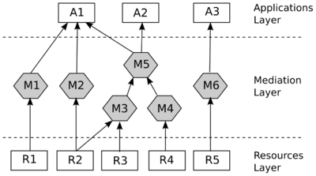
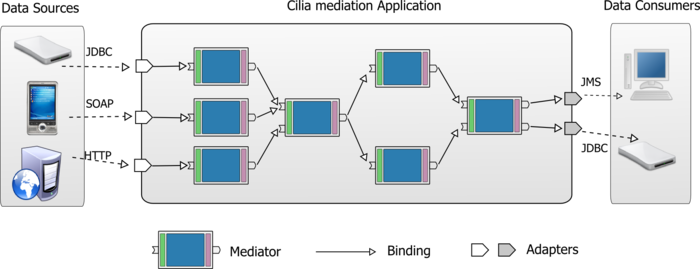
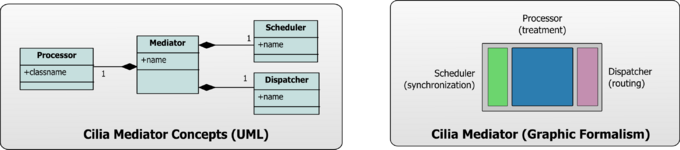
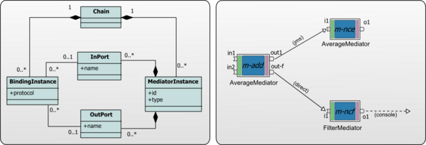

Introduction to mediation
History
Mediation has been historically used to integrate data stored in IT resources like databases, knowledge bases, file systems, digital libraries or electronic mail systems. It is implemented as a software layer between data sources and applications (see figure ), which enables interoperability and integration of disparate information in a timely fashion.

The mediation layer is composed of a set of mediators. G.Wiederhold defines a mediator as ”a software module that exploits encoded knowledge about certain sets or subsets of data to create information for a higher layer of applications”. Therefore, the principal objective of the mediation layer is to give to the interested applications a high-level abstraction representation of the data obtained from the data sources. To fulfill this objective, mediators provides operations such as:
- Selection and filtering of data depending on its characteristics.
- Conversion between incompatible data types.
- Aggregation of multiple data sources.
- Semantic alignment of inconsistent data.
Encapsulating such operations in dedicated software is clearly a good practice. Mediation software provides a single point of interface to the different applications and resources. This reduces the number of connections needed and facilitates change management. Mediation also provides an isolation layer from software details and, if it is appropriately configured, permits the quick and cost-effective development of new information services. The mediation layer improves re-usability and evolution of applications. . It also permits the transparent addition of new QoS (Quality of Service) properties such as security, reliability, etc. Finally, it leads to the improvement of the scalability of the whole system.
Scope
Nowadays, the scope of mediation spans many contexts in response to new requirements by the emergence of new environments, new technologies and new applications. Nevertheless, in the diversity of contexts, two basic forms of mediation repeatedly appear.
Data Integration
Mediators gather data from devices, apply operations on the collected data (such as aggregation, filtering, correlation, etc) and bring them in a coherent manner to business applications or supervision tools. Since new data sources can appear and disappear at any moment, the mediation system must be flexible and dynamic enough to manage the adaptation at run-time without stopping the whole system. Examples of such environments are:
- Medical monitoring and alert systems. In such environments, the mediation software brings real-time patient’s information, and sends alerts when some situation becomes alarming. Also, the system cannot be stopped while adding or removing sensors (like thermometers).
- Radio Frequency Identification (RFID). This technology allows physical objects to be tracked and connected them to the virtual world. Mediation is used to filter, aggregate and transform raw data gathered by the readers, and to send them to IT infrastructures, or system administrators.
Application Interoperability
Mediators deal with interoperation issues between heterogeneous software applications. In this context, the mediation software stands between client applications and provider applications (generally, Web Services). Its purpose is to enable a consumer to easily and properly use provided services. Also known as service mediation, this form of mediation aims to provide a coherent interface to heterogeneous services. It was initially advanced by the ESB (Enterprise Service Bus) community as an essential part of the ESB middleware. In general cases, Service Mediation allows a Service Requester to connect to an appropriate Service Provider without worrying about the interfaces and data heterogeneity. In addition, Service Mediation provides other functionalities such:
- Dynamic routing and requests dispatching, to one or multiple receivers in various contexts: service discovery, load balancing, services failure, etc.
- Security (e.g. cryptography, authorization, etc) which is a major preoccupation when different companies, using heterogeneous security systems, need to interact.
- Other non-functional concerns related to QoS management such as incomplete data management, quality measurement, tracing, caching, or failure detection and recovery.
Cilia: A framework for mediation
Cilia is a specialized framework for the construction of mediation applications, it proposes both: a specialized component model and a dynamic execution environment. Utilization of a component model aims the construction of mediation applications by composition of components, which leverages the modularity of applications. In addition to modularity, dynamicity is other important property in Cilia approach, mediations applications are enough flexible to change their architecture dynamically at run-time.
Overview of Cilia Applications
In Cilia approach a mediation application is conceived as a layer placed between data sources and target applications. In this layer, a set of tasks handling data are composed using a pipes-and-filter architectural style. Tasks in Cilia are called mediators, they are the basic composition unit in a Cilia application. Mediators are connected (i.e. composed) using unidirectional dataflows known as bindings in Cilia approach. In the next figure is shown a typical Cilia application.

Tasks in mediation application
Tasks realized in a mediation application have been classified in two groups:
Tasks associated to the* data processing
Incoming data synchronization. A mediator receives a set of data that will be processed. A synchronization task is realized over these incoming data in order to complete the data set to be processed. When the incoming data is ready the processing task must be triggered. For example, synchronization logic can wait for data for a period (temporal window), this task accumulates the data until the time milestone is reached and then it triggers the data processing over the accumulated data set.
Mediation logic execution. Once notified to process data, mediator must perform its treatment algorithm on received data. This algorithm is data-centric, it will transform the collected data or generate new data if needed.
Outgoing data routing. When the data is processed, the mediator should decide where to deliver the resulting processed data. A routing algorithm must be implemented for each mediator. It can be simple, for example send the data to all next mediators, or more complex and based in the content of data or its meta-data.
Tasks associated to** data communication
Data collection. Mediators could receive data from different sources (other mediators or applications), using different communication protocols or even it could be collected directly from a data source (as a database). For example, data can be collected using a SOAP endpoint or data can be collected using a JDBC database connection.
Data delivering. Mediators deliver data to other mediators in the chain, external applications or data stores. Different communication protocols could be used to transmit the processed data. For example, data could be transferred publishing data in a topic of a publish/subscribe system or invoking a SOAP end-point.
Cilia Building Blocks
There is two building blocks in Cilia: mediators and adapters.
Mediator
The mediator concept constitutes the basic building block in the Cilia component model. A mediator is responsible for the treatment on a set of data; this responsibility can be divided in three tasks:
- Data synchronization: a mediator has to wait for the required set of data before to start their processing.
- Data processing: in this step the main algorithm is applied on data collected by the mediator.
- Data routing: once the data have been treated the mediator has to decide where sent the processed data.
A mediator is composed itself of three constituent elements, each one responsible for one of the previously listed tasks. In the figure are presented the metamodel of a Mediator and also its graphic representation.

Processor
The processor is the central constituent of a mediator. It performs the data processing algorithm on received data. When data is ready to be treated, the processor is notified by the scheduler, then data is treated and finally the processor passes the data to the dispatcher. Some examples of processors are:
- String Splitter: splits the received data (a String) using a regular expression.
- XSLT Transformer: applies a XSLT transformation over on data (an XML document).
Scheduler
This element performs incoming data synchronization i.e. it decides when a set of data is ready to be processed. When a data set has been collected, the scheduler notifies the processor. Some examples of schedulers are:
- Periodic Scheduler: Data is collected during a period of time, and then it is sent to be processed periodically.
- Correlation Scheduler: waits for an set of correlated data (e.g. data with the same ID) to trigger the processing.
- Immediate Scheduler: triggers the processing once data arrives (no synchronization).
Dispatcher
The dispatcher must decide where to send the processed data. The dispatcher uses mediator ports to choose the destination. Some examples of dispatchers are:
- Multicast Dispatcher: send the processed data to all connected mediators.
- Content-Based Dispatcher: send the processed data to the chosen destination based in the data content.
Also, a mediator defines a set of entry ports and a set of exit ports; specifying the accepted data type for each port.
Adapters
Adapters are a special kind of mediators, they are placed in the boundaries of mediation applications. Therefore, adapters are responsible for communication with external data sources or target applications. They are three types of adapters:
In Adapters
They are responsible for data gathering (from mediation application point of view). Adapters can be passive where data is pushed from the environment to the adapter or active where data is pulled by the adapter.
Out Adapters
They are responsible for data delivering (from mediation application point of view). Data can be sent to different destinations by example to an external application (using a communication protocol) or they can be persisted in a file or database.
Request-Response Adapters
This special kind of adapter receives a data request from a data source and has to reply to the same source. In this case the client plays both roles, data source and target application.
Cilia applications mediation chain ======================
In Cilia a mediation application is known as a mediation chain. A mediation chain is built by composition of mediator instances, those instances are connected using bindings. A binding is a dataflow that brings all data put in an out-port of an instance to the in-port of another. The meta-model of Cilia applications is presented in the next figure.

Mediator Instances
In Cilia approach an instance is a configured occurrence of a mediator. The mediator configuration allows, for example, to configure its scheduler and/or dispatcher. This configuration is a set of key/value elements.
Adapter instances
In the same way as mediators, adapter instances are configured copy of Adapters.In addition, adaptors instances have respect some constrains: In-adapters could not have incoming bindings as well as out-adapters could not have outgoing bindings.
Bindings
A binding describe a logical connection between mediator instances or between a mediator instance and an adaptor instance. A binding is defined between an out-port of a mediator and an in-port of another.
Cilia Communication Blocks
Bindings are logical connectors used to lie to mediators in order to pass data from one to another. This data is transported using a communication protocol. In Cilia, to make communicate mediators are necessary three kinds of components. In this section will be present these types of components.
Sender
Senders are components capable of send data in a particular communication protocol. Some examples of senders are:
- Direct Sender : send data by direct method invoking between mediators (they must be in the same JVM)
- JMS Sender : send data using MOMs implementing the JMS specification.
Collector
Collectors are components capable of receive data in a particular communication protocol. Some examples of collectors are:
- Direct Collector : receive data by direct method invoking between mediators (they must be in the same JVM)
- JMS Collector: receive data using MOMs implementing the JMS specification.
Linker
Linkers are components in charge of performing the binding operation between two mediators using a defined protocol. Its responsibility resides in configuring in a suitable way the sender and collector used to communicate in that protocol.
Cilia Extensibility
Cilia is a fully extensible framework, it exposes 4 extension points. They will be presented in next sections.
Processors (and Mediators) The easiest (and most used) way to extend Cilia is creating new kind of processors. These new processors can be combined with existing schedulers and dispatchers in order to create new types of mediators.
Adapters: Adapters allow connect your mediation application with external data sources and applications. If you did not find an appropriate adapter for your data source you can always develop a new one.
Scheduler and Dispatchers A more advance way to extend the framework consist is the definition schedulers for more sophisticated kind of data synchronization. On the other hand, data routing algorithms can be also be implemented creating new Dispatchers.
Binding Protocols A binding uses a protocol to pass data between mediators, some basic protocols are available to developers in the Cilia library. If your application needs to use a new protocol three elements must be built: a sender and a collector as well as a linker in charge to connect the mediators using the new protocol.